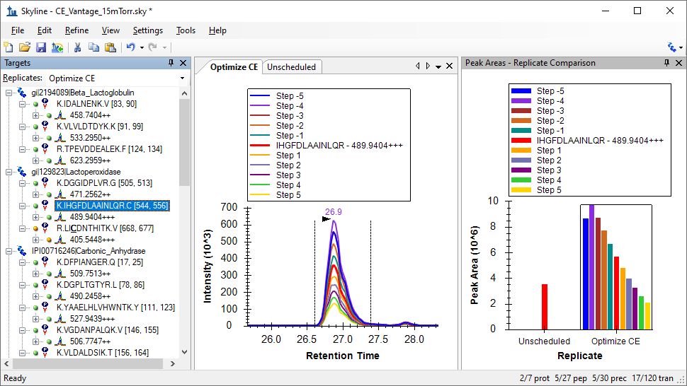

Skyline supports a rich user interface and fully automated pipeline for predicting and optimizing SRM instrument parameters like collision energy (CE) and declustering potential (DP). This tutorial focuses on CE optimization, but the same principles apply to DP optimization. In 2016, concept was expanded to include compensation voltage (CoV) on the SCIEX SelexION and more recently Thermo FAIMS instruments. It could eventually apply to other parameters, such as cone voltage and RF lens. This functionality described here has been tested and in use for over a decade on instruments from Agilent, SCIEX, Shimadzu, Thermo, and Waters.
In most cases, the default method in Skyline of assigning CE values to transitions sacrifices very little peak area to full, empirical optimization of each transition separately1, but Skyline provides ample support for performing per-transition CE optimization when you feel the need. The default method in Skyline for calculating CE values is to use a linear equation of the form:
CE = slope * (precursor m/z) + intercept
Each charge state is allowed to have a separate equation.
The default equations provided with a new Skyline installation generally cover charges 2 and 3 for charge 1 fragments of peptides. If you are working with higher charge state precursors or fragments, then individual fragment optimization is likely to provide greater benefit2. If you are working with molecules other than peptides, you should consult the “Small Molecule Method Development and CE Optimization” tutorial.
This tutorial will cover how to use Skyline both to derive your own linear equations for CE and to perform empirical, per-transition optimization.
To start this tutorial, download the following ZIP file:
https://skyline.ms/tutorials/OptimizeCE.zip
Extract the files in it to a folder on your computer, like:
C:\Users\brendanx\Documents
This will create a new folder:
C:\Users\brendanx\Documents\OptimizeCE
It will contain all the files necessary for this tutorial. Open the file CE_Vantage_15mTorr.sky in this folder, either by double-clicking on it in Windows Explorer, or by clicking Open in the File menu in Skyline.
In most cases, you will be able to use an existing linear equation for calculating the CE of your SRM transitions for peptides. If you have used Skyline to run any experiments before, then you have probably already done this. Skyline also makes it easy to derive your own linear equation, or just to check that your system produces similar results to the linear equation you intend to use. This tutorial will walk you through how we did this originally for our Thermo TSQ Vantage.
The file CE_Vantage_15mTorr.sky, which you have opened, contains 20 charge 2 precursors and 10 charge 3 precursors, which we measured successfully in the Michrom bovine protein mix. After determining the CE values that produce the maximum peak area for each of these precursors Skyline can perform a simple linear regression to derive the equation we seek. Skyline can also generate the methods containing the measurements it needs to determine those optimal CE values.
The methods Skyline creates will contain multiple transitions for each product ion to be measured over a range of CE values centered at the CE predicted by an existing linear equation.
To look at the linear equation settings used in this experiment do the following:
You should be presented with a form that looks like this:
In it you can see the slope and y-intercept values used for both charge 2 and charge 3 precursors. Any precursor charges that are not covered will use the linear equation for the closest charge. At the bottom of the form, you can also see the fields Step count and Step size. These tell Skyline how many transitions to measure for each product ion, at what voltage interval.
For this experiment, we used 5 steps on either side of the equation predicted value, for a total of 11 transitions per product ion, each 1 volt apart. In your own experiments you may choose to change these values to better suit your instrument and your confidence in the original linear equation.
For this tutorial, simply cancel out of the forms you have opened, and we will turn to method creation.
The optimization method for this tutorial will contain 11 transitions for every product ion or 1320 transitions total. Initial unscheduled measurement of all 1320 transitions required 22 sample injections. By using the Skyline support for scheduled methods, we were able to decrease this number to 5 and even 4 sample injections.
The first step in creating these scheduled methods is to acquire unscheduled SRM for the peptides in the document using the default equation CE values. The unscheduled data will be used to record the peptide retention time ranges for building a scheduled SRM method for the actual CE optimization. To create an unscheduled transition list do the following:
Make sure the form looks like this:

When you open the resulting CSV file in Excel, you will find it is an unscheduled Skyline transition list for a Thermo Scientific SRM instrument (pre-Quantiva), as shown below, with 6 columns in the order precursor m/z, product m/z, CE, peptide sequence, protein name, fragment ion:
| 458.7404 | 688.3624 | 18.9 | IDALNENK | gi|2194089|Beta_Lactoglobulin | y6 |
| 458.7404 | 617.3253 | 18.9 | IDALNENK | gi|2194089|Beta_Lactoglobulin | y5 |
| 458.7404 | 504.2413 | 18.9 | IDALNENK | gi|2194089|Beta_Lactoglobulin | y4 |
| 458.7404 | 390.1983 | 18.9 | IDALNENK | gi|2194089|Beta_Lactoglobulin | y3 |
| 533.295 | 853.4302 | 21.4 | VLVLDTDYK | gi|2194089|Beta_Lactoglobulin | y7 |
| 533.295 | 754.3618 | 21.4 | VLVLDTDYK | gi|2194089|Beta_Lactoglobulin | y6 |
| 533.295 | 641.2777 | 21.4 | VLVLDTDYK | gi|2194089|Beta_Lactoglobulin | y5 |
| 533.295 | 526.2508 | 21.4 | VLVLDTDYK | gi|2194089|Beta_Lactoglobulin | y4 |
| 623.2959 | 1047.484 | 24.5 | TPEVDDEALEK | gi|2194089|Beta_Lactoglobulin | y9 |
We used this method to acquire SRM data for the 120 transitions with the default, predicted CE. You can import the resulting instrument output file by doing the following:
After the import is completed, Skyline should look like this:

You can select a few of the peptides in the tree-view to see their chromatograms in the chart on the right.
Skyline now has the information it needs to create scheduled optimization methods for the 1320 transitions required. To create these methods:

NOTE: We eventually realized that 132 was a better value for Max concurrent transitions, because it allows 3 precursors * 4 transitions * 11 CE values to be measured concurrently. The number 110 used in this tutorial is a vestige of initial measurements made with 5 transitions. We encourage you to consider your transitions per precursor * CE values carefully in choosing this value to maximize your measurements per method.
These actions should cause Skyline to create 5 new transition lists of similar size, and Windows Explorer should show something like the following for your OptimizeCE folder:

If you open one of the CSV files in Excel, it should contain a transition list like the one below, with 9 columns in the order precursor m/z, product m/z, CE, start time, stop time, polarity, peptide sequence, protein name, fragment ion:
| 458.7404 | 688.3124 | 13.9 | 7.81 | 11.81 | 1 | IDALNENK | gi|2194089|Beta_Lactoglobulin | y6 |
| 458.7404 | 688.3224 | 14.9 | 7.81 | 11.81 | 1 | IDALNENK | gi|2194089|Beta_Lactoglobulin | y6 |
| 458.7404 | 688.3324 | 15.9 | 7.81 | 11.81 | 1 | IDALNENK | gi|2194089|Beta_Lactoglobulin | y6 |
| 458.7404 | 688.3424 | 16.9 | 7.81 | 11.81 | 1 | IDALNENK | gi|2194089|Beta_Lactoglobulin | y6 |
| 458.7404 | 688.3524 | 17.9 | 7.81 | 11.81 | 1 | IDALNENK | gi|2194089|Beta_Lactoglobulin | y6 |
| 458.7404 | 688.3624 | 18.9 | 7.81 | 11.81 | 1 | IDALNENK | gi|2194089|Beta_Lactoglobulin | y6 |
| 458.7404 | 688.3724 | 19.9 | 7.81 | 11.81 | 1 | IDALNENK | gi|2194089|Beta_Lactoglobulin | y6 |
| 458.7404 | 688.3824 | 20.9 | 7.81 | 11.81 | 1 | IDALNENK | gi|2194089|Beta_Lactoglobulin | y6 |
| 458.7404 | 688.3924 | 21.9 | 7.81 | 11.81 | 1 | IDALNENK | gi|2194089|Beta_Lactoglobulin | y6 |
| 458.7404 | 688.4024 | 22.9 | 7.81 | 11.81 | 1 | IDALNENK | gi|2194089|Beta_Lactoglobulin | y6 |
| 458.7404 | 688.4124 | 23.9 | 7.81 | 11.81 | 1 | IDALNENK | gi|2194089|Beta_Lactoglobulin | y6 |
| 458.7404 | 617.2753 | 13.9 | 7.81 | 11.81 | 1 | IDALNENK | gi|2194089|Beta_Lactoglobulin | y5 |
| 458.7404 | 617.2853 | 14.9 | 7.81 | 11.81 | 1 | IDALNENK | gi|2194089|Beta_Lactoglobulin | y5 |
| 458.7404 | 617.2953 | 15.9 | 7.81 | 11.81 | 1 | IDALNENK | gi|2194089|Beta_Lactoglobulin | y5 |
| 458.7404 | 617.3053 | 16.9 | 7.81 | 11.81 | 1 | IDALNENK | gi|2194089|Beta_Lactoglobulin | y5 |
| 458.7404 | 617.3153 | 17.9 | 7.81 | 11.81 | 1 | IDALNENK | gi|2194089|Beta_Lactoglobulin | y5 |
| 458.7404 | 617.3253 | 18.9 | 7.81 | 11.81 | 1 | IDALNENK | gi|2194089|Beta_Lactoglobulin | y5 |
There are 11 CE values for each product ion. The product m/z value is incremented slightly for each value as first described by Sherwood et al., 20093. This provides a platform independent means for Skyline to recognize the CE values when the measured data is imported.
Once data for each of the exported methods is collected, you can import it into Skyline for subsequent analysis. For this tutorial, you will import the instrument output files we have supplied by doing the following:
While the files are importing, do the following to prepare for viewing the collected data:
Once the data is loaded, Skyline should look something like this:

The red bar in the middle of the Peak Areas view and the red curve among the chromatograms is the measurement for the transition with the CE calculated by the starting linear equation. In the image above, the maximum peak area was achieved at a CE value 4 volts lower (labeled Step -4 in the legend) than the calculated default CE.
You should now review the peaks for all of the peptide precursors to verify the integration boundaries for each peak. When you get to the peptide EGIHAQQK, you will find that it measured very little signal. Given the quality of the unscheduled peak, this may be due to a retention time shift that caused the peptide to elute outside the scheduling window. Before recalculating the linear equation for CE with these data, you will want to delete this peptide.
The first peptide in the document, IDALNENK, is probably also questionable given its significant drop in intensity and its shift from a retention time of 9.8 minutes to 11.0 minutes. But it is worth looking at from another perspective:
In this view all peak areas are normalized to the area of the calculated CE value in red. The area of the peak with the calculated CE is given 100%, and the optimization values go from almost invisible beside the unscheduled peak to showing a curve a little less smooth than others, but not that bad.

For this tutorial, however, remove this peptide before calculating the new equation for the Thermo TSQ Vantage.
To create a newly optimized linear equation for CE using this data, perform the following steps:
If you deleted the two suggested peptides, Skyline should calculate the equation coefficients as:
| Charge | Slope | Intercept |
| 2 | 0.0305 | 2.5061 |
| 3 | 0.0397 | 1.4217 |
You may wonder how close they are to the original values.
Skyline will present the following graphs:

The points correlate very well to the new linear equation, and appear to be on average 3-4 volts below the CE values chosen by the default equations.
The document settings have been changed to make Skyline use a new linear equation for calculating the CE values in any new method or transition list export. But what if you are planning on moving to measuring large numbers of replicates, and just want to use the CE value which produced the maximum peak area in the optimization data set you imported?
To cause Skyline to use optimal measured values in exported methods:
And, to export a method with each transition optimized separately:
If you open the exported transition list in Excel, you will see the same 9 columns, because this is still a scheduled method. Even when you have enough cycle time to cover all your transitions for the entire gradient of your experiment, the instrument output files will be smaller and import faster, if you use a scheduled method. These are obviously desirable attributes of data for a large enough multi-replicate study to warrant empirical CE optimization of each transition.
The exported transition list should look like:
| 533.295 | 853.4302 | 17.4 | 16.35 | 20.35 | 1 | VLVLDTDYK | gi|2194089|Beta_Lactoglobulin | y7 |
| 533.295 | 754.3618 | 17.4 | 16.35 | 20.35 | 1 | VLVLDTDYK | gi|2194089|Beta_Lactoglobulin | y6 |
| 533.295 | 641.2777 | 18.4 | 16.35 | 20.35 | 1 | VLVLDTDYK | gi|2194089|Beta_Lactoglobulin | y5 |
| 533.295 | 526.2508 | 23.4 | 16.35 | 20.35 | 1 | VLVLDTDYK | gi|2194089|Beta_Lactoglobulin | y4 |
| 623.2959 | 1047.484 | 21.5 | 10.98 | 14.98 | 1 | TPEVDDEALEK | gi|2194089|Beta_Lactoglobulin | y9 |
| 623.2959 | 918.4415 | 21.5 | 10.98 | 14.98 | 1 | TPEVDDEALEK | gi|2194089|Beta_Lactoglobulin | y8 |
| 623.2959 | 819.3731 | 22.5 | 10.98 | 14.98 | 1 | TPEVDDEALEK | gi|2194089|Beta_Lactoglobulin | y7 |
| 623.2959 | 460.2766 | 24.5 | 10.98 | 14.98 | 1 | TPEVDDEALEK | gi|2194089|Beta_Lactoglobulin | y4 |
| 471.2562 | 769.4567 | 16.3 | 15.03 | 19.03 | 1 | DGGIDPLVR | gi|129823|Lactoperoxidase | y7 |
| 471.2562 | 712.4352 | 15.3 | 15.03 | 19.03 | 1 | DGGIDPLVR | gi|129823|Lactoperoxidase | y6 |
| 471.2562 | 599.3511 | 15.3 | 15.03 | 19.03 | 1 | DGGIDPLVR | gi|129823|Lactoperoxidase | y5 |
| 471.2562 | 484.3242 | 20.3 | 15.03 | 19.03 | 1 | DGGIDPLVR | gi|129823|Lactoperoxidase | y4 |
You can see that the CE values in the third column differ among transitions of the same precursor. Skyline has chosen the CE value that produced the maximum measured peak area for each transition.
There is certainly more to learn about CE optimization. For instance, you can look into storing your optimized transition CE values in an optimization library, also on the Transition Settings – Prediction tab. Hopefully this tutorial will be enough to get you started on using Skyline for your CE optimization needs. If your instrument is not now explicitly covered by name in the Transition Settings list of linear equations for CE calculation, you may want to run your own tests to ensure you are using a linear equation that calculates the best CE values as accurately as possible. If you are performing SRM experiments with many peptides in charge states not covered by an existing equation, you probably will want to calculate new equations for those charge states. This tutorial should have provided you with the tools you will need in these cases. We hope you will use them.
1. MacLean, B. et al. Effect of Collision Energy Optimization on the Measurement of Peptides by Selected Reaction Monitoring (SRM) Mass Spectrometry. Anal. Chem. 82, 10116–10124 (2010).
2. Schmidlin, T. et al. Diet-induced neuropeptide expression: feasibility of quantifying extended and highly charged endogenous peptide sequences by selected reaction monitoring. Anal. Chem. 87, 9966–9973 (2015).
3. Sherwood, C. A. et al. Rapid Optimization of MRM-MS Instrument Parameters by Subtle Alteration of Precursor and Product m/z Targets. J. Proteome Res. 8, 3746–3751 (2009).